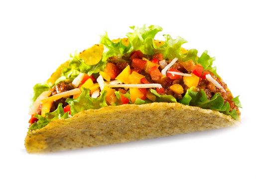

An internationally popular hand-sized food item of Mexican origin combining seasoned meat, vegetables, and other fillings and served inside a folded or rolled corn or flour tortilla
Preheat an outdoor grill for medium-high heat and lightly oil the grate.
Grill chicken, turning occasionally, until juices run clear and chicken is no longer pink at the center, about 7 minutes. An instant-read thermometer, inserted near the center, should read at least 165 degrees F (74 degrees C).
Heat corn tortillas until soft and pliable in the microwave, about 1 minute. Top with chicken, onions, and cilantro.